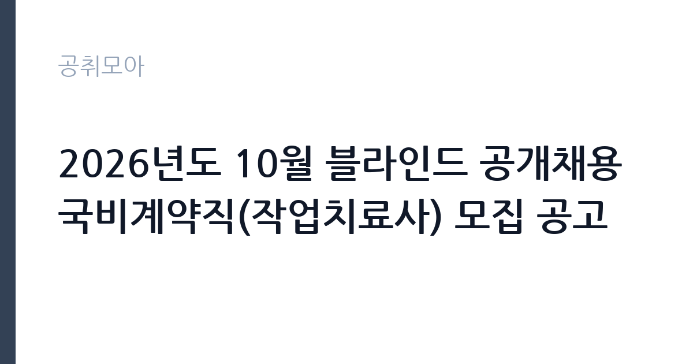

[공공기관] 2026년도 10월 블라인드 공개채용 국비계약직(작업치료사) 모집 공고
양산부산대학교병원 · 경남 · 마감 2026-11-09 (D-14) · 출처 나라일터

한눈에 보는 모집 조건
| 기관 | 양산부산대학교병원 |
|---|---|
| 공고명 | 2026년도 10월 블라인드 공개채용 국비계약직(작업치료사) 모집 공고 |
| 고용형태 | 기간제 |
| 근무지 | 경남 |
| 게시일 | 2026-10-26 |
| 마감일 | 2026-11-09 (D-14) |
지원자격, 이렇게 읽으세요
- 국비계약직 1명
- 접수 ~2026-11-09 마감
- 세부 조건은 원문 공고문 확인
기간제 근로자는 근로계약 기간이 정해진 신분입니다. 계약 기간과 갱신 가능 여부가 근로계약서에 명시되며 기간 만료 시 근로관계가 종료됩니다. 결원 보충이나 특정 사업 기간에 맞춰 채용되는 경우가 많아 업무 범위가 명확합니다. 이번 공고는 양산부산대학교병원가 직접 진행하는 자체 전형입니다. 작업치료 직무는 작업치료사 면허가 필수입니다. 면허 취득 예정자도 지원할 수 있는지, 졸업 예정자와 자격 취득 예정자의 인정 범위가 어떻게 다른지 공고문에서 먼저 확인해야 합니다. 경력자는 해당 분야 근무 연수와 담당했던 환자군을 증명서로 입증해야 합니다. 병원 규정상 정년(만 60세)을 넘으면 지원할 수 없고, 채용 후에는 결격사유 조회와 채용 신체검사가 이어집니다. 제출서류는 공고문에 적힌 순서대로 정리하면 담당자가 확인하기 쉽습니다. 자격 취득 예정자는 채용 공고의 예정자 허용 조항을 먼저 확인해야 합니다. 조항이 없으면 지원 자체가 반려될 수 있습니다. 우대 사항에 해당하면 증빙을 반드시 첨부해야 하며, 누락하면 가점 없이 평가됩니다.
이 공고의 포인트
이 건은 양산부산대학교병원가 같은 시기에 낸 2개 모집분야 가운데 작업치료 직무입니다. 다른 직무 공고와 요건이 다르므로 지원 전에 모집분야 표를 대조해야 합니다. 이 공고의 첫 번째 포인트는 고용 형태입니다. 계약 기간이 정해져 있어 근무 종료 시점이 명확합니다. 그만큼 짧은 기간에 어떤 실적을 남길지가 중요해집니다. 두 번째는 업무 범위가 명확하다는 점입니다. 작업치료 직무로 채용되므로 배치 이후 담당 업무가 크게 흔들리지 않습니다. 세 번째는 근무지입니다. 경남 지역 근무로 수도권 공고에 비해 지원자 분포가 넓지 않아 상대적으로 경쟁이 분산되는 경우가 있습니다. 같은 기관의 다른 공고와 접수 기간이 겹치므로 중복 지원 가능 여부를 확인해야 합니다. 다만 선발 인원이 1명으로 많지 않아 자격을 갖춘 지원자가 몰리면 경쟁률이 높아질 수 있습니다.
전형은 어떻게 진행되나
전형은 서류심사와 면접심사를 기본으로 하고 직무에 따라 필기나 실기, 체력검정이 추가됩니다. 서류 단계에서는 응시자격 충족 여부와 제출서류 형식을 확인하며 이 단계에서 탈락하는 지원자가 적지 않습니다. 면접은 직무 이해도와 경험을 확인하는 방식으로 진행되고 발표는 개별 통보나 홈페이지 게시로 이뤄집니다. 최종합격 이후에는 결격사유 조회와 채용 신체검사가 이어지며 이 절차에서 문제가 확인되면 합격이 취소될 수 있습니다. 구체적인 전형 단계와 배점은 공고문에 표로 정리되어 있으니 원문을 기준으로 준비하십시오. 응시 수수료가 있는 경우 환불 기준과 기한이 정해져 있으니 접수 전에 확인하십시오.
이런 분께 추천해요
- 작업치료사 면허를 보유한 분
- 평가 기록과 재활 회의 참여 경험이 있는 분
- 계약 기간 동안 환자 치료의 연속성을 지킬 수 있는 분
지원 전 체크리스트
- 응시자격 요건과 경력 기준을 충족하는가 — 경력은 증명서로 입증해야 합니다
- 계약 기간과 근무 시작일·종료일을 확인했는가
- 제출서류 목록을 모두 준비했는가 — 누락 시 서류 단계에서 탈락합니다
- 접수 마감 2026-11-09 이전에 접수 방식을 확인해 제출했는가
모집 일정과 제출 타이밍
접수 마감은 2026-11-09이고 공고는 2026-10-26에 게시되었습니다. 준비 기간 14일 안에 서류 작성, 증빙 발급, 접수를 모두 마쳐야 하므로 주말을 포함해 일정을 미리 나누는 것이 좋습니다. 특히 경력 기술서나 직무수행계획서를 요구하는 공고는 작성에 시간이 걸리므로 첫날 초안을 잡으십시오. 서류 합격자 발표와 면접 사이 간격이 짧은 경우가 많아 면접 예상 질문은 서류 제출 전에 정리해 두는 편이 유리합니다. 마감 직전에는 접속이 몰리므로 여유를 두고 제출하십시오. 공휴일이 끼어 있으면 증명서 발급이 늦어질 수 있으니 발급 일정을 앞당기십시오.
직무 이해하기: 공공기관
국립대학병원은 진료와 교육, 연구를 함께 수행하는 공공 의료 기관입니다. 권역 책임 의료 기관으로서 중증 환자 진료와 공공 보건 사업을 운영하고, 행정·원무·보건직 인력을 정기적으로 채용합니다. 병원 특성상 교대 근무와 당직이 포함되는 직무가 많습니다. 작업치료 업무는 환자가 일상생활 동작과 사회 복귀를 되찾도록 평가하고 훈련을 설계하는 일입니다. 근력·관절 가동 범위·인지 기능을 평가해 치료 목표를 세우고, 일상생활 동작 훈련과 인지 재활, 보조기 착용 훈련을 진행합니다. 진료과 의사·간호·사회복지 인력과 함께 회진과 재활 회의에 참여하고, 치료 기록과 평가지를 매 세션마다 남깁니다. 국비계약직은 국가 지원 사업의 인건비로 채용되는 경우가 많아 사업 기간과 인건비 기준이 계약서에 명시됩니다. 환자 이동과 보조가 필요해 허리와 어깨 부담이 따르는 직무입니다. 근무조는 사업 일정과 기상 상황에 맞춰 편성되므로 면접에서 배치 구역을 확인하는 것이 좋습니다. 업무 강도와 근무 시간대는 부서 배치에 따라 달라지므로 면접에서 확인하는 것이 가장 정확합니다. 이 건의 근무 대상 지역·부서는 원문 기준 '작업치료사'입니다.
자기소개서 작성 팁
지원서는 평가-계획-중재-재평가의 흐름으로 경험을 정리하면 읽기 쉽습니다. 담당했던 환자 수와 진단군, 적용한 치료 기법, 기능 개선 결과를 수치로 제시하십시오. 국비 사업 직무라면 사업 목표와 본인 경험을 연결하는 문단이 필요합니다. 짧은 계약 기간이라도 기록과 인수인계를 철저히 하겠다는 태도를 밝히면 신뢰를 얻습니다. 직무 경험이 많지 않다면 경험의 양보다 과정을 구체적으로 쓰는 편이 낫습니다. 어떤 상황에서 무엇을 판단했고 어떤 결과가 나왔는지 순서대로 서술하면 신뢰가 생깁니다. 지원 동기와 기여 방안은 한 문단씩 짧게 유지하고, 가장 자신 있는 경험에 분량을 몰아주십시오. 마지막 문장은 포부보다 구체적인 실행 계획으로 끝내는 것이 좋습니다.
면접 준비 포인트
면접에서는 평가와 치료 계획 수립 과정을 구체적으로 묻습니다. 같은 진단이라도 환자 상태에 따라 목표를 어떻게 다르게 세우는지, 치료에 반응하지 않을 때 무엇을 바꾸는지 답해야 합니다. 다른 직종과 협업한 경험, 보호자에게 치료 계획을 설명한 경험도 자주 질문합니다. 국비계약직은 사업 기간이 정해져 있으므로 근무 기간 동안의 목표를 함께 제시하면 준비도가 드러납니다. 모르는 질문에 추측으로 답하면 감점 요인이 되므로, 확인 후 답하겠다고 밝히는 편이 안전합니다. 본인 경험을 말할 때는 기간, 역할, 결과를 순서대로 정리해 두면 질문이 바뀌어도 활용할 수 있습니다.
급여·근무조건 읽는 법
양산부산대학교병원의 구체적인 보수 수치는 이 공고 원문의 처우 항목과 보수표에서 확인해야 합니다. 공시 자료로 확인되지 않은 금액은 이 글에서 추정해 제시하지 않습니다. 국비계약직 보수는 사업 인건비 기준과 병원 임금 규정을 함께 적용받는 경우가 많아 동일 직종의 정규직과 차이가 날 수 있습니다. 계약서에 월 급여와 수당 항목, 계약 기간이 명시되므로 총액을 기준으로 비교해야 합니다. 2026년 적용 최저임금은 시급 10,320원, 월 환산 2,156,880원(주 40시간·209시간 기준)입니다. 고용노동부 고시 제2025-47호로 확정된 금액입니다. 공고문에 금액이 제시되지 않은 항목은 원문 보수표나 처우 설명에서 확인해야 하며 확인되지 않은 수치는 쓰지 않는 것이 원칙입니다. 비교할 때는 월 급여뿐 아니라 상여·명절휴가비·복지포인트·초과근무수당까지 포함한 연간 총액으로 계산하십시오. 기간제라면 계약 기간 동안의 총액을, 무기계약이라면 호봉 상승과 정년까지의 누적 소득을 기준으로 판단하는 편이 정확합니다.
자주 묻는 질문
- 선발 인원은 몇 명인가요?
공고문 기준 1명입니다. 직종별로 인원이 나뉘는 경우가 있으니 모집분야 항목을 함께 확인하십시오. - 근무지는 어디인가요?
경남 지역의 양산부산대학교병원 소속 근무지입니다. 세부 주소와 출퇴근 조건은 원문 공고문에서 확인할 수 있습니다. - 보수는 얼마인가요?
채용 신분(기간제)과 기관 임금 규정에 따라 정해지며 구체적인 금액은 공고문 처우 항목에 제시됩니다. 금액이 공개되지 않은 경우에는 원문의 보수표를 확인하십시오.
함께 보면 좋은 공고
[공공기관] 한국도로공사 대전충남본부 관내 지사(천안, 대전, 영동, 당진, 공주, 부여) 제설 기간제근로자(정비원) 채용 — 마감 2026-11-03[공공기관] 한국도로공사 대전충남본부 관내 지사(천안, 대전, 영동, 당진, 공주, 부여) 제설 기간제근로자(운전원) 채용 — 마감 2026-11-03[공공기관] 한국도로공사 대전충남본부 관내 지사(천안, 대전, 영동, 당진, 공주, 부여) 제설 기간제근로자(도로관리원) 채용 — 마감 2026-11-03출처: 나라일터 공개정보를 바탕으로 공취모아가 정리한 안내글입니다. 모집 조건·일정은 변경될 수 있으니 지원 전 반드시 원문 공고문을 확인하세요. 본 글은 정보 제공용이며 합격을 보장하지 않습니다.